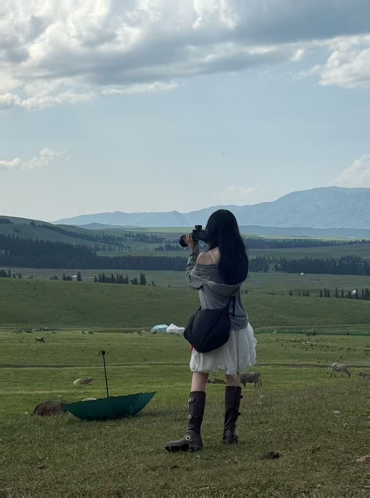
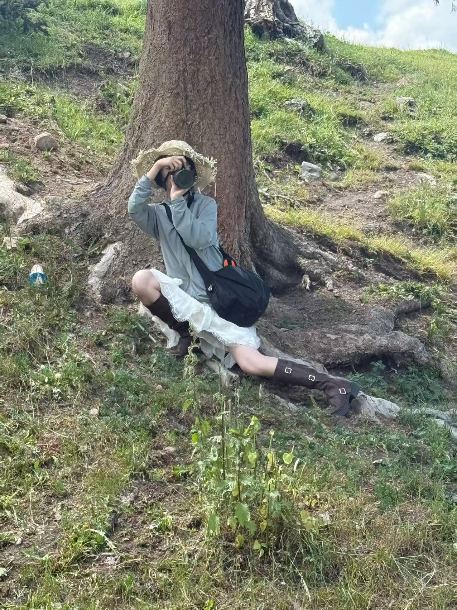

关于我
 你好！我是李明，一名热爱摄影的摄影师。
我从2010年开始学习摄影，至今已有10多年的经验。我喜欢用相机记录生活中的美好瞬间，把平凡的景物变得不平凡。
我擅长多种摄影风格，包括人像摄影、风光摄影、街头摄影等。我认为摄影不仅是技术，更是一种表达情感的方式。
我的作品曾多次在摄影比赛中获奖，也举办过个人摄影展。我希望通过我的镜头，让更多人看到世界的美丽。
如果你也喜欢摄影，欢迎联系我，一起交流学习！
联系方式：
电话：......
邮箱：......
微信：......